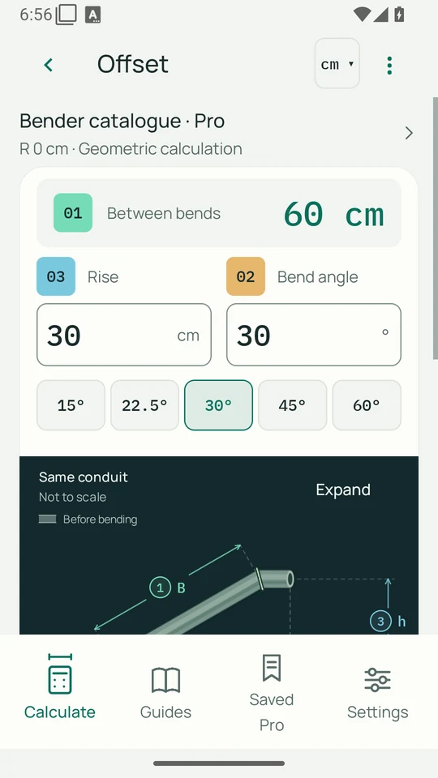

Two-bend offsets
Calculate the distance between bend references on straight conduit. Work in inches, feet, centimeters or millimeters.
BendTally for Android
Enter the rise, bend angle and the centerline radius of your bender. Read bend spacing and shrink alongside a dimensioned drawing.
Single-plane offsets are free in the app.

Calculate the distance between bend references on straight conduit. Work in inches, feet, centimeters or millimeters.
Pro covers offsets in two planes, parallel runs and finding the bend angle from known dimensions.
Save layouts with Pro, export A4 or A3 PDF drawings and sync your saved layouts through Google Drive if you choose.